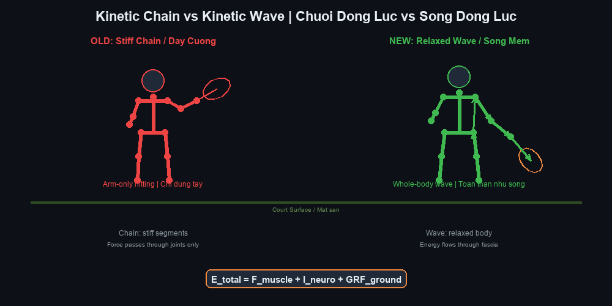
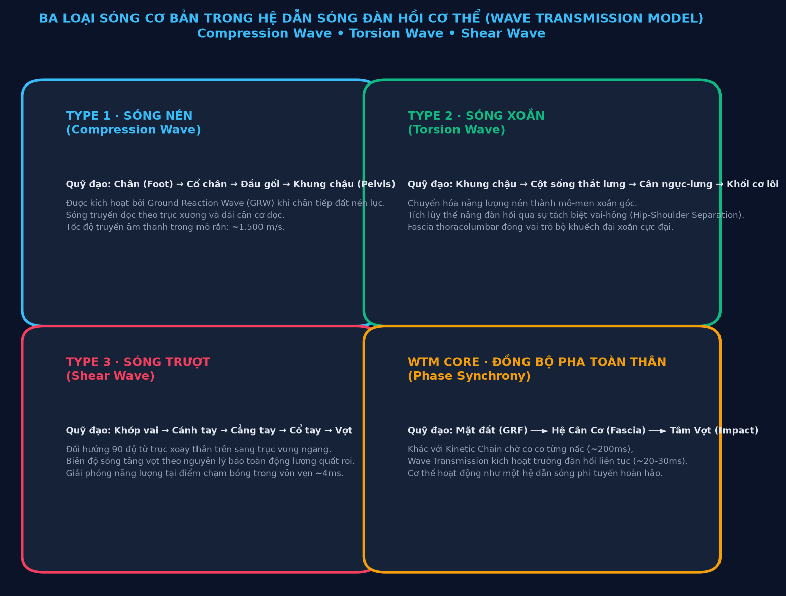
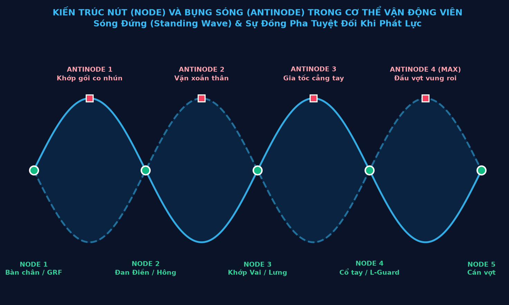

PHẦN 1: BẢN CHẤT SÓNG CƠ HỌC & GIỚI HẠN CỦA MÔ HÌNH KINETIC CHAIN TRUYỀN THỐNG
— Viện Nghiên Cứu Quần Vợt Tương Lai (Tennis Future Lab)
1.1. Khái Luận Nghiên Cứu: Cơ Thể Người Như Một Hệ Dẫn Sóng Đàn Hồi Phi Tuyến
Trong suốt nhiều thập kỷ, nền khoa học huấn luyện thể thao hiện đại đã tiếp cận chuyển động con người dựa trên lăng kính của cơ học Newton cổ điển và kỹ thuật robot. Cơ thể được hình dung như một hệ thống các thanh đòn cứng (xương) nối với nhau qua các khớp xoay bản lề, được kéo giật bởi các pít-tông sinh học (cơ bắp).
Mặc dù mô hình Chuỗi động học liên hoàn (Kinetic Chain) đã giải thích được một phần nguyên lý cộng dồn vận tốc từ gốc đến ngọn, nó bộc lộ những hạn chế căn bản khi áp dụng vào những cú đánh có tốc độ cực đại trong quần vợt chuyên nghiệp hiện đại. Những cú vung vợt với vận tốc đầu vợt vượt quá 160 km/h của Carlos Alcaraz hay Jannik Sinner diễn ra trong một khung thời gian ngắn đến mức các phản xạ thần kinh điều khiển cơ bắp thông thường không thể kịp kích hoạt tuần tự.
Nghiên cứu này đề xuất một khung lý thuyết đột phá: Wave Transmission Model (WTM) — Mô hình Truyền sóng Động lực học. Theo mô hình này, cơ thể không phải là một cỗ máy cơ khí gồm các mắt xích khô cứng, mà là một môi trường dẫn sóng đàn hồi phi tuyến liên tục (Continuous Non-linear Elastic Waveguide). Toàn bộ khối cơ, gân, xương và đặc biệt là hệ thống màng cân cơ (fascia) tạo thành một trường dẫn truyền dao động cơ học tinh vi.

1.2. Tại Sao Mô Hình Đòn Bẩy Rời Rạc Chưa Đầy Đủ?
Từ "chuỗi" (chain) trong thuật ngữ Kinetic Chain mang hàm ý một sự tuần tự tuyến tính: mắt xích A kéo mắt xích B, mắt xích B kéo mắt xích C. Trong giáo trình tennis truyền thống, người ta thường dạy học viên: "Đạp chân, xoay hông, xoay vai, vung cánh tay, Động tác sấp cổ tay / xoay trong cẳng tay."
Tuy nhiên, cơ sinh học thực nghiệm chỉ ra ba nghịch lý nghiêm trọng của mô hình chuỗi đòn bẩy:
- Nghịch lý thời gian dẫn truyền thần kinh: Thời gian từ khi kích hoạt điện thế màng tế bào cơ đến khi cơ co hoàn toàn mất tối thiểu 30-50ms cho mỗi nhóm cơ riêng biệt. Nếu lực phải truyền qua 5-6 mắt xích tuần tự, tổng thời gian sẽ là 150-250ms. Trong thực tế, toàn bộ cú vung vợt tấn công chỉ diễn ra trong khoảng 80-120ms.
- Nghịch lý tổn thất năng lượng tại các khớp: Trong cơ học, mỗi khớp nối là một điểm tiêu hao năng lượng do ma sát và biến dạng. Nếu cơ thể chỉ là chuỗi đòn bẩy, việc truyền lực qua hàng chục khớp xương sẽ làm suy giảm hơn 60% năng lượng ban đầu từ mặt đất.
- Nghịch lý chấn thương quá tải khớp: Vận động viên cố gắng tạo lực bằng cách gồng cứng các khớp liên tiếp sẽ tập trung toàn bộ ứng suất cắt (shear stress) lên sụn khớp vai và dây chằng cùi chỏ, dẫn đến hội chứng rách chóp xoay và thoái hóa sớm.
| Tiêu Chí So Sánh | Mô Hình Chuỗi động học liên hoàn (Kinetic Chain) | Mô Hình Truyền Sóng (Wave Transmission Model) |
|---|---|---|
| Bản chất cấu trúc | Chuỗi các đòn bẩy cơ học rời rạc nối qua khớp | Trường sóng đàn hồi liên tục trong hệ cân cơ toàn thân |
| Cơ chế truyền năng lượng | Chuyển giao tuần tự từng nấc từ dưới lên trên | Tích lũy thế năng, đồng bộ pha và giải phóng xung kích |
| Môi trường dẫn lực chính | Sợi cơ co rút chủ động (Active contractile muscle) | Mạng lưới cân màng collagen phi tuyến (Fascial matrix) |
| Tốc độ truyền xung lực | Bị giới hạn bởi tốc độ co cơ sinh học (~150-200ms) | Tốc độ sóng âm cơ học trong môi trường đàn hồi (~15-30ms) |
| Trạng thái cơ bắp tối ưu | Co cơ chủ động, siết cứng theo chuỗi | Thả lỏng động (Phóng Tùng), triệt tiêu co cứng đối kháng |
1.3. Ba Loại Sóng Cơ Bản Trong Hệ Dẫn Sóng Cơ Thể
Khi bàn chân vận động viên đạp xuống mặt sân, đó không đơn thuần là điểm khởi đầu của một đòn bẩy. Đó là một sự kiện phát sinh xung sóng cơ học (Ground Reaction Wave - GRW). Năng lượng này di chuyển qua cơ thể dưới ba dạng sóng cơ bản:

1. Sóng Nén (Type 1 · Compression Wave)
Sóng nén phát sinh ngay khi chân tiếp đất nén trọng lượng cơ thể xuống mặt sân cứng. Phản lực mặt đất (GRF) tạo ra một sóng áp suất truyền dọc theo trục xương cẳng chân, đùi và cột sống. Vì mô xương và màng xương có mật độ phân tử cao, sóng nén lan truyền với vận tốc cực nhanh (khoảng 1.500 m/s), đóng vai trò như một tín hiệu kích hoạt toàn hệ thống trước khi bất kỳ cơ bắp nào kịp co lại.
2. Sóng Xoắn (Type 2 · Torsion Wave)
Khi sóng nén chạm tới khung chậu, góc đặt của bàn chân và sự lệch pha giữa hai trục chân chuyển hóa sóng nén thành mô-men xoắn xoay tròn. Sóng xoắn vặn xoắn cột sống thắt lưng và kéo căng toàn bộ dải cân cơ ngực - lưng (Thoracolumbar Fascia). Đây là nơi cơ thể nạp năng lượng đàn hồi khổng lồ, tương tự như việc vặn xoắn một sợi dây cao su chịu tải cao.
3. Sóng Trượt (Type 3 · Shear Wave)
Khi sóng xoắn chạm tới khớp vai và đai ngực, nó bẻ góc 90 độ để chuyển thành sóng trượt dọc theo cánh tay đến đầu vợt. Khớp vai không đóng vai trò phát lực mà là một "bộ đổi hướng sóng" (Wave Deflector). Cánh tay thả lỏng hoàn toàn hoạt động như một sợi dây thừng, biên độ dao động tăng dần theo chiều dài cánh tay và đạt cực đại tại tâm mặt vợt.
1.4. Tốc Độ Dẫn Truyền: 20ms Của Sóng Cơ Học vs. 200ms Của Chuỗi Cơ Khí
Sự khác biệt căn bản giữa một tay vợt nghiệp dư và một bậc thầy thế giới nằm ở cơ chế truyền năng lượng này.
Tay vợt nghiệp dư sử dụng chuỗi cơ khí: anh ta gồng cơ chân, sau đó gồng cơ bụng, tiếp tục gồng cơ ngực và dùng sức cánh tay để đập bóng. Quá trình này không chỉ tiêu tốn năng lượng khổng lồ mà còn khiến toàn bộ các khớp bị khóa cứng, triệt tiêu sóng dao động tự nhiên và tạo ra cảm giác đánh bóng nặng nề, thiếu độ sâu và thiếu độ xoáy topspin.
Ngược lại, tay vợt đẳng cấp cao sử dụng hệ dẫn sóng: toàn thân duy trì trạng thái đàn hồi lỏng lẻo nhưng gắn kết (Tensegrity). Khi chân đạp đất, xung sóng cơ học truyền xuyên suốt cơ thể chỉ trong 20-30ms. Năng lượng được giải phóng tự động qua cơ chế hồi phục đàn hồi của cân cơ, biến cú đánh thành một cú quất roi không trọng lượng nhưng mang sức công phá hủy diệt.
PHẦN 2: HỆ CÂN CƠ MYOFASCIAL, TÍNH ĐÀN HỒI PHI TUYẾN & CƠ CHẾ PHÁT KÌNH THÁI CỰC QUYỀN
— Luận Thuyết Thái Cực Quyền & Cơ Sinh Học Quần Vợt Hiện Đại
2.1. Fascia Như Môi Trường Dẫn Sóng Toàn Thân (Liquid Crystal Collagen Matrix)
Trong suốt lịch sử giải phẫu y học, hệ thống màng cân cơ (fascia) từng bị xem là các lớp màng bọc vô tri, chỉ có chức năng ngăn cách các nhóm cơ riêng biệt. Tuy nhiên, các công trình nghiên cứu tiên phong của Tiến sĩ Robert Schleip và Helene Langevin đã chứng minh rằng: fascia là một cơ quan cảm giác lớn nhất cơ thể và là một mạng lưới truyền lực liên tục, đàn hồi phi tuyến tính dưới dạng tinh thể lỏng collagen.
Đặc tính đàn hồi của fascia không tuân theo định luật Hooke thông thường (lực đàn hồi tỷ lệ thuận tuyến tính với độ biến dạng). Ngược lại, nó có tính chất phi tuyến (non-linear elasticity):
- Độ dẻo ở tốc độ chậm: Khi cơ thể chuyển động từ từ, hệ fascia mềm mại, trượt nhẹ nhàng và hấp thụ biến dạng mà không kháng cự.
- Độ cứng đàn hồi cực đại ở tốc độ cao: Khi chịu xung lực giật nhanh (high-velocity shock), các sợi collagen lập tức khóa cứng lại và trở thành một lò xo siêu đàn hồi, truyền năng lượng nguyên vẹn mà không làm biến dạng cấu trúc khớp.
- Khả năng hồi phục hình dạng tức thì: Khác với cơ bắp phải tiêu thụ phân tử ATP để co và duỗi, fascia tích trữ và giải phóng động năng hoàn toàn thụ động theo chu kỳ đàn hồi tự nhiên.
2.2. Các Dải Cân Cơ Trọng Yếu Trong Dẫn Sóng Thể Thao
Trong cơ thể người, có ba xa lộ dẫn sóng chính kết nối các chi và cột sống thành một khối thống nhất:
1. Dải Cân Ngực - Lưng (Thoracolumbar Fascia - TLF)
Đây là ngã tư trung tâm điều phối toàn bộ xung lực giữa thân trên và thân dưới. Tấm cân hình thoi dày đặc ở vùng thắt lưng này kết nối cơ mông lớn (Gluteus Maximus) của một bên với cơ lưng rộng (Latissimus Dorsi) của bên đối diện. Khi vận động viên nhún chân và xoay hông chuẩn bị vung vợt, dải TLF bị kéo căng chéo, đóng vai trò như một màng trống tích trữ năng lượng xoắn cực hạn.
2. Dải Chéo Trước (Anterior Oblique Sling - AOS)
Bao gồm cơ chéo bụng ngoài, màng cân bụng và cơ khép đùi đối bên. Dải chéo trước chịu trách nhiệm truyền sóng nén và sóng trượt từ chân trước qua thân trước, tạo nên sự bùng nổ xoay chuyển khung chậu và lồng ngực trong cú forehand hiện đại.
3. Dải Chéo Sau (Posterior Oblique Sling - POS)
Kết nối cơ mông lớn qua dải TLF sang cơ lưng rộng đối bên. Dải này là chìa khóa của cú giao bóng sấm sét (Serve) và các cú vung vợt trên cao (Overhead Smash), nơi toàn bộ sóng đàn hồi được kích hoạt từ cú bật nhảy của bàn chân sau.
2.3. Phân Tích Cơ Chế Phát Kình (Fa Jin) Dưới Góc Nhìn Biomechanics
Trong Thái Cực Quyền nội gia, khái niệm "Phát Kình" (Fa Jin) mô tả một cú đánh bộc phát sức mạnh xuyên thấu chỉ trong một phần nghìn giây mà không cần lấy đà xa hay gồng cơ bắp cuồn cuộn.
Khi phân tích Fa Jin bằng các cảm biến gia tốc và điện cơ đồ hiện đại (EMG), các nhà nghiên cứu nhận thấy trình tự vận động của một võ sư Thái Cực đỉnh cao và một tay vợt tennis thượng thừa (như Roger Federer khi thực hiện cú forehand lướt êm) có sự tương đồng đến kinh ngạc:
- Giai đoạn Tích Lũy (Storage Phase): Hạ thấp trọng tâm, đưa cơ thể vào trạng thái chìm sâu (Trầm đan điền). Toàn bộ khối cơ bên ngoài thả lỏng hoàn toàn, để trọng lực kéo căng các dải cân màng bên trong như một cánh cung đang được giương.
- Giai đoạn Khởi Sóng (Wave Genesis): Bàn chân sau đạp đất đột ngột mà không gồng cứng cơ đùi. Phản lực mặt đất tạo ra một xung sóng nén lan truyền thẳng đứng lên xương chậu.
- Giai đoạn Điều Chế Xoay (Torsional Modulation): Khung chậu xoay mở với góc độ vừa phải, truyền xung lực vào ngã tư Thoracolumbar Fascia. Năng lượng được gia tốc nhờ sự chênh lệch góc xoay giữa vai và hông (Hip-Shoulder Separation Angle).
- Giai đoạn Bộc Phát & Triệt Tiêu (Release & Wave Termination): Sóng trượt lan dọc theo cánh tay thả lỏng và bùng nổ tại bề mặt tiếp xúc (Điểm tiếp xúc bóng hoặc điểm phát kình). Toàn bộ chu trình giải phóng năng lượng diễn ra trong vòng chưa đầy 25-30ms.
2.4. Khái Niệm "Phóng Tùng" (Sung) & Nghệ Thuật Triệt Tiêu Co Cứng Đối Kháng
Trở ngại lớn nhất ngăn cản sự lan truyền sóng đàn hồi trong cơ thể chính là hiện tượng Co Cứng Đối Kháng (Co-contraction). Khi một tay vợt lo lắng, sợ đánh hỏng hoặc cố tình dùng sức tay đập bóng thật mạnh, não bộ sẽ đồng thời kích hoạt cả nhóm cơ chủ vận (agonist) lẫn nhóm cơ đối vận (antagonist).
Hậu quả của việc này là hai nhóm cơ tự ghìm chân nhau, tạo nên sự căng cứng nội tại, khóa chặt các khớp và chặn đứng đường đi của sóng cơ học. Năng lượng sinh ra từ mặt đất bị hấp thụ và tiêu tán thành nhiệt năng ngay trong cơ thể, khiến tay vợt nhanh mỏi mệt và gia tăng tối đa nguy cơ viêm gân cùi chỏ (Tennis Elbow).
Để sóng truyền thông suốt, cơ thể phải đạt tới trạng thái mà võ học phương Đông gọi là Phóng Tùng (Sung) — một trạng thái thả lỏng linh hoạt, nơi các khớp mở rộng, dây chằng căng nhẹ như dây đàn, nhưng không hề rũ rượi hay yếu ớt. Chỉ khi đạt được trạng thái Phóng Tùng này, cơ thể mới có thể biến thành một hệ dẫn sóng hoàn hảo, cho phép năng lượng cơ học luân chuyển với hiệu suất gần như tuyệt đối 100%.
PHẦN 3: ĐỘNG LỰC HỌC SÓNG TRONG FOREHAND HIỆN ĐẠI & SỰ KIỆN CHẠM BÓNG
— Viện Nghiên Cứu Quần Vợt Tương Lai (Tennis Future Lab)
3.1. Kiến Trúc Nút (Node) và Bụng Sóng (Antinode) Trong Cơ Thể
Khi sóng tới (incident wave) truyền từ mặt đất lên gặp sóng phản xạ (reflected wave) dội ngược từ đầu vợt, hiện tượng giao thoa sóng cơ học xảy ra trong cơ thể người, tạo thành một Hệ Sóng Đứng (Standing Wave System).
Trong một hệ sóng đứng lý tưởng, có hai thành phần cơ bản:
- Điểm Nút (Node): Là những vị trí có biên độ dao động bằng 0 nhưng chịu áp suất cơ học và mật độ thế năng cực đại. Trong cú đánh forehand, các điểm nút tự nhiên nằm tại: điểm tiếp xúc bàn chân với mặt đất, tâm trục quay xương chậu (Đan Điền), khớp ổ chảo cánh tay và vùng cán vợt tại bàn tay cầm.
- Bụng Sóng (Antinode): Là những vị trí dao động với biên độ và gia tốc góc lớn nhất. Các bụng sóng tiêu biểu nằm tại: khớp gối khi co duỗi nạp lực, cơ chéo bụng khi vặn xoắn và đỉnh đầu vợt (Racquet Tip) khi giải phóng vung theo quỹ đạo hình quạt.

Một vận động viên thượng thừa là người có khả năng giữ vững các Điểm Nút (không để trục cơ thể bị nghiêng ngả, xô lệch) trong khi cho phép các Bụng Sóng dao động tự do với vận tốc cực hạn. Nếu một điểm nút bị trượt (ví dụ: mất thăng bằng chân trụ hoặc xoay hông mất kiểm soát), toàn bộ hệ sóng đứng sẽ sụp đổ và năng lượng vung vợt bị tiêu tán ngay lập tức.
3.2. Hiện Tượng "Wave Collapse" & Trượt Pha Có Kiểm Soát
Trong cơ học sóng, khi nhiều sóng thành phần gặp nhau đồng pha, biên độ dao động sẽ được cộng hưởng theo cấp số nhân (Resonance Amplification). Tuy nhiên, trong cú forehand hiện đại, các chuyên gia cơ sinh học phát hiện một cơ chế tinh vi hơn nhiều: Trượt Pha Có Kiểm Soát (Controlled Phase Delay).
Thay vì tất cả các bộ phận cùng chuyển động một lúc, mỗi phân đoạn chuyển động trễ hơn phân đoạn liền trước khoảng 15-25 mili-giây:
- Khung chậu xoay trước (Pha 0 ms).
- Lồng ngực và dải cân thoracolumbar bắt đầu xoay trễ hơn 20 ms.
- Cánh tay trên và cùi chỏ bắt đầu được kéo đi trễ hơn 40 ms.
- Cẳng tay và cổ tay ngửa ra phía sau (Lag phase) trễ hơn 60 ms.
- Đầu vợt vút lên tiếp xúc bóng trễ hơn 80-85 ms.
Sự trượt pha này tạo ra hiện tượng cơ học gọi là Wave Collapse (Sự Sụp Đổ Sóng): khi phân đoạn lớn hơn (hông, thân) đột ngột hãm tốc độ quay lại, toàn bộ động lượng không biến mất mà bị dồn nén và truyền tức thì sang phân đoạn nhỏ hơn và nhẹ hơn (cánh tay, cẳng tay, vợt). Đây chính là bí mật giúp những tay vợt có thể hình thanh mảnh như Jannik Sinner có thể tạo ra tốc độ bóng khủng khiếp mà không cần phải có cơ bắp hộ pháp.
3.3. Sự Kiện Chạm Bóng: Wave Termination Event Trong ~4 Mili-giây
Thời gian bóng nén vào mặt lưới vợt chỉ kéo dài trong khoảng thời gian siêu ngắn: từ 3.5 đến 4.5 mili-giây (0.004 giây). Trong khoảng thời gian này, không có bất kỳ mệnh lệnh thần kinh nào từ não bộ có thể can thiệp được. Cú đánh hoàn toàn là một Sự Kiện Kết Thúc Sóng (Wave Termination Event).
Tại khoảnh khắc tiếp xúc này, đỉnh của sóng trượt cơ học phải đến đúng vị trí tâm vợt (sweet spot) trùng khít với thời điểm quả bóng đạt độ nén tối đa trên mặt dây. Khi sự đồng bộ pha này diễn ra:
- Hiệu suất chuyển giao xung lượng đạt cực đại: Gần 90% động lượng tích tụ được chuyển đổi thành vận tốc tịnh tiến và tốc độ xoáy (RPM) của quả bóng.
- Triệt tiêu phản lực dội ngược lên cơ thể: Do xung lượng bóng triệt tiêu đúng đỉnh sóng, vận động viên cảm thấy mặt vợt "êm như lướt qua bơ", hoàn toàn không có cảm giác tức giật ở cổ tay hay cùi chỏ.
- Quỹ đạo follow-through tự nhiên: Sau va chạm, năng lượng dư thừa được tiêu tán một cách êm ái dọc theo đường cong xoắn ốc của vòng lặp số 8, bảo vệ tuyệt đối các bao khớp chóp xoay.
3.4. Phân Tích Thực Tiễn: Federer, Alcaraz và Sinner Dưới Lăng Kính Cơ Học Sóng
| Vận Động Viên | Đặc Trưng Hệ Dẫn Sóng | Cơ Chế Khởi Sóng & Giải Phóng | Ứng Dụng Thực Chiến |
|---|---|---|---|
| Roger Federer | Sóng đứng hoàn hảo (Standing Wave Master), giữ trục đầu và cổ bất động tuyệt đối tại điểm tiếp xúc. | Sử dụng cơ chế thẳng tay (Straight-arm forehand), biên độ sóng dài, thả lỏng cổ tay cực độ, tạo cảm giác thanh thoát vô trọng lực. | Độ chính xác không gian tối thượng, khả năng giấu hướng đánh (disguise) đến micro-giây cuối cùng. |
| Carlos Alcaraz | Sóng nén bộc phát siêu nhanh (High-explosive compression wave), tích lực đạp đất cực sâu từ tư thế chân mở rộng (Open Stance). | Tận dụng tối đa phản lực mặt đất và sức đàn hồi của dải cân chéo trước (Anterior Oblique Sling) với gia tốc góc phi thường. | Khả năng tạo lực xuyên phá từ vị trí phòng thủ sâu ngoài sân, biến thế thủ thành đòn winner chớp nhoáng. |
| Jannik Sinner | Hiện tượng trượt pha tối ưu tuyệt đối (Extreme Controlled Phase Delay), độ trễ vai-vợt cực sâu. | Thân hình mảnh mai đóng vai trò hệ dẫn sóng hẹp với trở kháng thấp, năng lượng truyền qua cánh tay như một sợi roi da mềm. | Tốc độ bóng bình quân cao nhất thế giới hiện nay, đường bóng xuyên sâu cắm sát vạch cuối sân đối thủ. |
PHẦN 4: GIÁO TRÌNH HUẤN LUYỆN CẢM THỤ SÓNG, ĐIỀU KHIỂN THẦN KINH & PHÒNG NGỪA CHẤN THƯƠNG
— Viện Nghiên Cứu Quần Vợt Tương Lai (Tennis Future Lab)
4.1. Cơ Chế Điều Khiển Thần Kinh: Đan Điền, Mệnh Môn & Trung Tâm Khối Lượng (COM)
Trong giải phẫu phương Tây, Trung Tâm Khối Lượng (Center of Mass - COM) nằm ở vùng chậu, ngay dưới rốn khoảng 3-5 cm. Trong võ học phương Đông, đây chính là huyệt Đan Điền (Dantian) — trung tâm tích tụ khí và phát lực. Đối diện với Đan Điền ở phía sau cột sống thắt lưng là huyệt Mệnh Môn (Mingmen).
Dưới góc độ thần kinh học hiện đại, vùng Đan Điền - Mệnh Môn tập trung một mật độ thụ thể cảm thụ bản thể (proprioceptors) dày đặc nhất trong toàn bộ cơ thể. Khi vận động viên học cách điều khiển chuyển động bắt đầu từ việc "khởi động Đan Điền" (chuyển dịch vi mô của xương chậu) và "mở Mệnh Môn" (thả lỏng độ cong thắt lưng để cân thoracolumbar dãn ra):
- Hệ thần kinh tự chủ chuyển sang trạng thái tập trung sâu: Giảm căng thẳng tâm lý, hạ nhịp tim và đồng bộ hóa nhịp thở với chu kỳ vung vợt.
- Kích hoạt các phản xạ căng cơ tủy sống (Spinal Stretch Reflex): Giúp cơ thể tự động phản ứng với tốc độ bóng đối thủ nhanh hơn thời gian xử lý của vỏ não tới 80 mili-giây.
- Duy trì trục quay thăng bằng năng động: Trọng tâm luôn nằm giữa hai chân, cho phép xoay người linh hoạt đa hướng mà không bao giờ bị ngã người ra sau (falling back).
4.2. Chu Kỳ Kéo Dãn - Rút Ngắn (SSC) & Bảo Tồn Khớp Tuyệt Đối
Chu kỳ Kéo Dãn - Rút Ngắn (Stretch-Shortening Cycle - SSC) là cơ chế mà cơ bắp và gân được kéo căng trước khi co lại, giúp tích lũy thế năng đàn hồi. Tuy nhiên, nếu thời gian chuyển tiếp giữa kéo căng và co lại vượt quá 0.25 giây, năng lượng đàn hồi sẽ bị biến thành nhiệt và biến mất.
Mô hình Truyền Sóng (WTM) giải quyết triệt để bài toán này bằng cách tối ưu hóa thời gian đảo chiều chuyển động. Thay vì dừng khựng lại rồi giật ngược về phía trước, vận động viên chuyển động theo các cung elip và đường cong liên tục của vòng lặp số 8.
Nhờ chuyển động dạng sóng liên tục, cơ thể vận động viên được bảo vệ tuyệt đối:
- Bảo tồn gân cùi chỏ (Phòng ngừa Tennis Elbow): Cổ tay không gập giật mà dao động tự do như đuôi cá, triệt tiêu hoàn toàn rung chấn từ Điểm tiếp xúc bóng tác động lên gân cơ duỗi cổ tay quay ngắn (ECRB).
- Bảo tồn khớp vai và chóp xoay (Rotator Cuff Preservation): Trục vai xoay quanh một điểm nút ổn định, không bị giằng xé bởi lực hãm phanh đột ngột.
- Giảm tải đốt sống thắt lưng L4-L5: Lực xoắn được phân bổ đều dọc theo mạng lưới cân màng thay vì tập trung bẻ gãy đĩa đệm cột sống.
4.3. Hệ Thống 10 Bài Tập Thực Chiến Cảm Thụ Sóng (Wave Transmission Drills)
| Mã Bài Tập | Tên Bài Tập | Mục Tiêu Huấn Luyện | Phương Pháp Thực Hiện |
|---|---|---|---|
| DRILL 01 | Sóng Roi Dây Đàn Hồi (Resistance Tube Whiplash) | Cảm nhận sóng trượt qua cánh tay và triệt tiêu gồng cứng bắp tay. | Cố định một đầu dây đàn hồi mềm vào tường, tay cầm đầu kia vung theo hình số 8 sao cho tạo thành các gợn sóng chạy dọc dây. |
| DRILL 02 | Ném Bóng Tạ Mềm Theo Sóng (Medicine Ball Wave Throw) | Đồng bộ pha giữa đạp đất, xoay hông và mở dải cân chéo trước. | Đứng thế Open Stance, hạ trọng tâm nạp lực, xoay hông ném bóng tạ 1-2kg vào tường chỉ bằng độ bung của hông và ngực, tay thả lỏng. |
| DRILL 03 | Vợt Khăn Ướt (Wet Towel Snap Drill) | Phát triển hiện tượng Wave Collapse và gia tốc đầu vợt micro-giây. | Dùng một chiếc khăn tắm cuốn chặt một đầu, thực hiện động tác vung vợt sao cho đầu khăn phát ra tiếng nổ "đét" đanh gọn đúng điểm tiếp xúc giả định. |
| DRILL 04 | Trạm Trang Trầm Điền (Standing Stake Rooting) | Xây dựng điểm nút bàn chân và giải phóng co cứng khớp gối, cổ chân. | Đứng tấn thoải mái, hai gối hơi chùng, giữ cột sống thẳng tự nhiên trong 10 phút, hít thở sâu vào vùng Đan Điền trước mỗi buổi tập. |
| DRILL 05 | Vung Vợt Dẻo Âm Thanh (Flexible Shaft Swing) | Nhận diện độ trễ vai - vợt (Phase Delay) qua âm thanh xé gió. | Sử dụng dụng cụ hỗ trợ cán dẻo, lắng nghe tiếng rít của không khí: tiếng rít phải phát ra ở phía trước điểm tiếp xúc, không phải ở sau lưng. |
| DRILL 06 | Đánh Bóng Trên Tấm Nhún (Mini-Trampoline Strike) | Kích hoạt phản lực mặt đất nhịp nhàng và cảm thụ thăng bằng động. | Đứng trên bạt nhún mini, đón bóng từ huấn luyện viên và đánh trả bằng nhịp nảy hồi tiếp của lò xo bạt nhún. |
| DRILL 07 | Đánh Bóng Mắt Nhắm (Blindfold Kinesthetic Contact) | Tăng cường thụ thể cảm thụ bản thể proprioception thay vì phụ thuộc thị giác. | Nhắm mắt khi bóng đã nảy lên và thực hiện cú đánh hoàn toàn bằng cảm nhận không gian và lắng nghe âm thanh tiếng bóng. |
| DRILL 08 | Bóng Nước Chuyển Động (Water Ball Deceleration) | Luyện hãm tốc mượt mà theo đường cong elip thay vì phanh cứng. | Vung vợt và kết thúc bằng việc giữ một quả bóng có chứa nước bên trong sao cho nước không bị lắc tung giật cục. |
| DRILL 09 | Tiếp Xúc Không Khí (Micro-Impact Feeler) | Luyện cảm giác mặt vợt lướt êm qua điểm tiếp xúc mà không làm rơi vận tốc. | Tập vung vợt lướt qua một quả bóng treo trên dây mà chỉ chạm phớt lông nỉ, duy trì vận tốc vung xuyên suốt không ngập ngừng. |
| DRILL 10 | Thái Cực Forehand (Slow-Motion Flow Forehand) | Tích hợp toàn bộ 3 loại sóng vào Chuỗi động học liên hoàn duy nhất. | Thực hiện toàn bộ kỹ thuật cú forehand với tốc độ chậm bằng 1/5 tốc độ thật trong 15 phút, cảm nhận từng thớ cân màng kéo căng và đàn hồi. |
4.4. Giáo Án Huấn Luyện Wave Transmission 5 Tuần
| Tuần Lễ | Giai Đoạn Trọng Tâm | Nội Dung Kỹ Thuật | Chỉ Số Đánh Giá Thành Công |
|---|---|---|---|
| Tuần 1 | Thanh Lọc Co Cứng & Thả Lỏng Động (De-stiffening) | Triệt tiêu thói quen gồng cơ bắp tay và vai. Tập bài tập Trạm Trang và vung khăn ướt hàng ngày. | Cơ bắp cánh tay hoàn toàn mềm mại khi chạm tay vào trong lúc đang vung vợt. |
| Tuần 2 | Khai Mở Xa Lộ Fascia Thoracolumbar | Tập ném bóng tạ mềm và xoay vặn trục Đan Điền - Mệnh Môn. Kết nối lực đạp chân sau với xoay hông. | Tăng góc tách biệt vai-hông (Hip-Shoulder Separation) thêm 12-15 độ mà không gây đau thắt lưng. |
| Tuần 3 | Thiết Lập Hệ Sóng Đứng (Standing Wave Integration) | Cố định điểm nút đầu và trục cột sống. Đồng bộ pha trượt 20ms giữa hông, vai và cổ tay. | Đầu không di chuyển quá 2cm trong suốt quá trình tiếp xúc bóng. |
| Tuần 4 | Gia Tốc Đầu Vợt & Wave Collapse | Giải phóng gia tốc đỉnh tại điểm tiếp xúc ~4ms. Luyện cú đánh On-the-rise và bóng nặng. | Vận tốc đầu vợt tăng 15-20% trong khi nhịp tim và mức độ gắng sức giảm đáng kể. |
| Tuần 5 | Tự Động Hóa & Ứng Dụng Thi Đấu Thực Chiến | Áp dụng Wave Transmission vào thi đấu điểm số căng thẳng. Duy trì trạng thái Phóng Tùng dưới áp lực. | Đạt trạng thái dòng chảy (Flow State), tỷ lệ bóng hỏng unforced error giảm trên 30%. |